id F814W_117_11472742
RA=149.49997
Dec=2.85397
mag=-5.05
SNR=5255.3
tile=117
missing[J/H/E]=__E
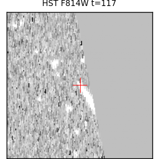
id F814W_030_1266500
RA=150.03907
Dec=1.69193
mag=-5.39
SNR=4974.6
tile=030
missing[J/H/E]=__E
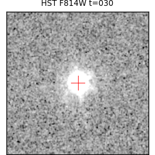


id F814W_103_10549437
RA=149.72805
Dec=2.71183
mag=-5.35
SNR=4746.8
tile=103
missing[J/H/E]=__E
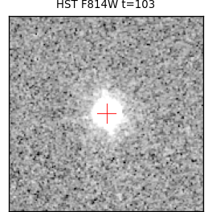
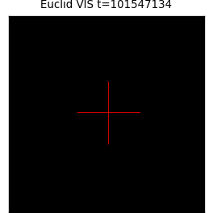

id F814W_086_8020717
RA=150.69797
Dec=2.49322
mag=-5.34
SNR=4711.9
tile=086
missing[J/H/E]=__E
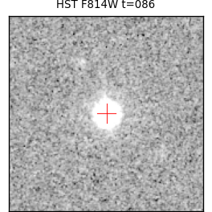
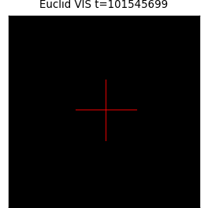
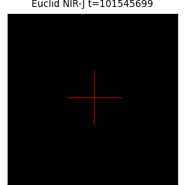
id F814W_041_2542977
RA=150.14026
Dec=1.80924
mag=-5.17
SNR=4689.4
tile=041
missing[J/H/E]=__E
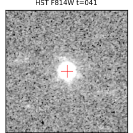


id F814W_080_7619113
RA=149.59828
Dec=2.36236
mag=-5.89
SNR=4660.1
tile=080
missing[J/H/E]=__E
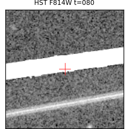
id F814W_044_3139253
RA=149.60052
Dec=1.90606
mag=-5.20
SNR=4536.6
tile=044
missing[J/H/E]=__E
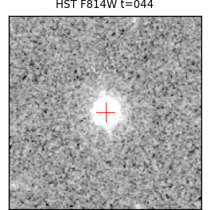


id F814W_030_1246012
RA=150.01712
Dec=1.66518
mag=-5.26
SNR=4479.4
tile=030
missing[J/H/E]=__E
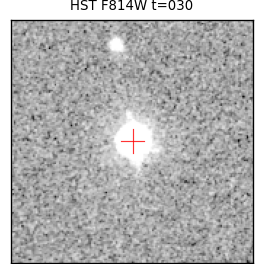


id F814W_028_0798152
RA=150.24766
Dec=1.65869
mag=-5.24
SNR=4402.9
tile=028
missing[J/H/E]=__E
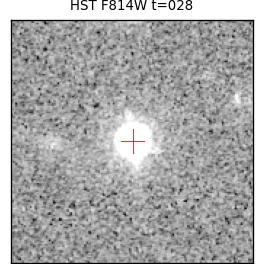


id F814W_117_11473278
RA=149.53813
Dec=2.85549
mag=-5.19
SNR=4397.0
tile=117
missing[J/H/E]=__E
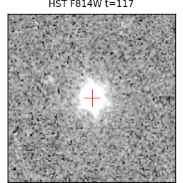


id F814W_069_6475270
RA=149.52274
Dec=2.19506
mag=-5.40
SNR=4391.9
tile=069
missing[J/H/E]=__E
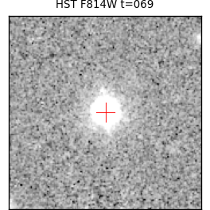


id F814W_057_4816886
RA=149.49686
Dec=2.00643
mag=-5.31
SNR=4366.8
tile=057
missing[J/H/E]=__E
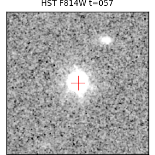

id F814W_057_4946711
RA=149.52365
Dec=2.11553
mag=-5.32
SNR=4355.1
tile=057
missing[J/H/E]=__E
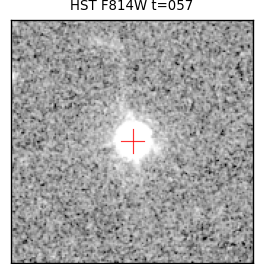


id F814W_092_8886652
RA=149.67893
Dec=2.50016
mag=-5.89
SNR=4347.3
tile=092
missing[J/H/E]=__E
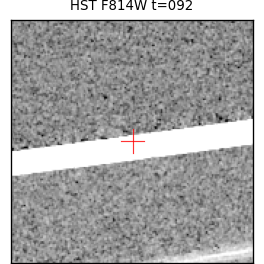
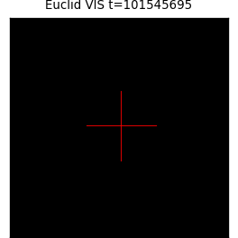

id F814W_042_2703023
RA=149.98109
Dec=1.82034
mag=-5.23
SNR=4341.0
tile=042
missing[J/H/E]=__E
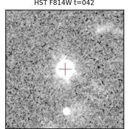
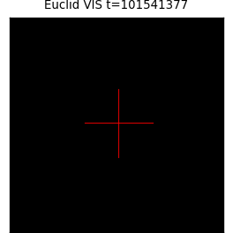

id VIS_101539938_0277603
RA=150.37835
Dec=1.55687
mag=-3.69
SNR=4338.1
tile=101539938
missing[J/H/E]=_H_

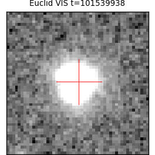
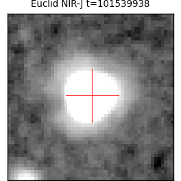
id F814W_043_2944312
RA=149.73381
Dec=1.94222
mag=-5.14
SNR=4320.4
tile=043
missing[J/H/E]=__E
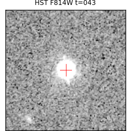
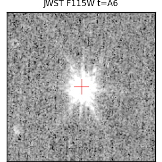
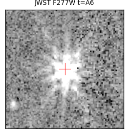
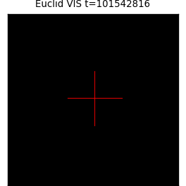

id F814W_088_8249549
RA=150.25827
Dec=2.50581
mag=-5.13
SNR=4300.7
tile=088
missing[J/H/E]=__E
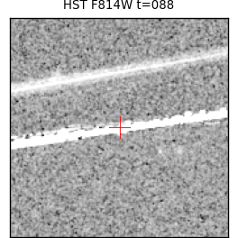
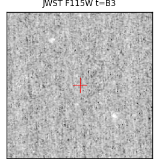
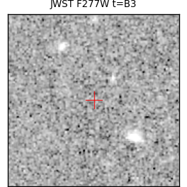
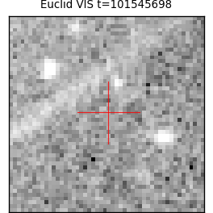
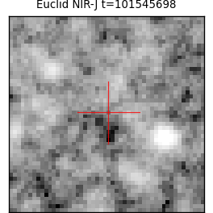
id F814W_115_11380882
RA=149.79143
Dec=2.85714
mag=-5.22
SNR=4235.9
tile=115
missing[J/H/E]=__E
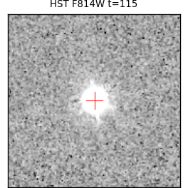
id F814W_086_7975598
RA=150.71165
Dec=2.47925
mag=-5.09
SNR=4202.0
tile=086
missing[J/H/E]=__E
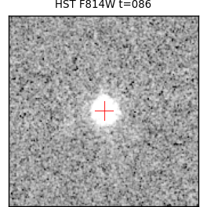


id F814W_088_8247358
RA=150.27885
Dec=2.50298
mag=-4.82
SNR=4191.2
tile=088
missing[J/H/E]=J_E
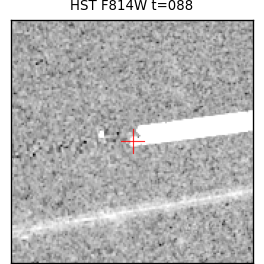
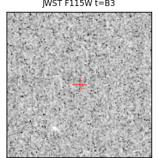
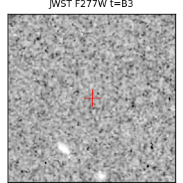
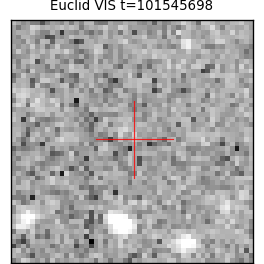
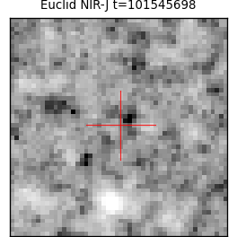
id VIS_101544257_1228116
RA=149.97532
Dec=2.37447
mag=-3.65
SNR=4154.5
tile=101544257
missing[J/H/E]=_H_
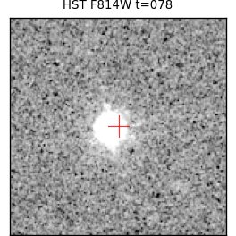
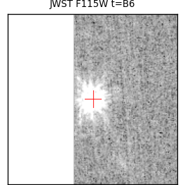
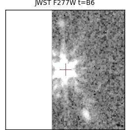
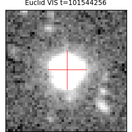
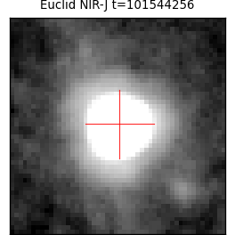
id F814W_104_10703451
RA=149.70832
Dec=2.66104
mag=-5.18
SNR=4133.5
tile=104
missing[J/H/E]=__E
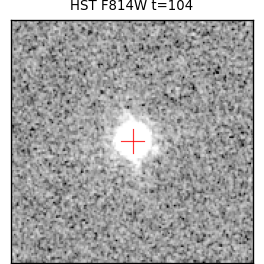

id F814W_039_2347942
RA=150.43440
Dec=1.88766
mag=-5.33
SNR=4129.9
tile=039
missing[J/H/E]=__E
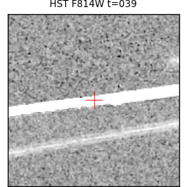

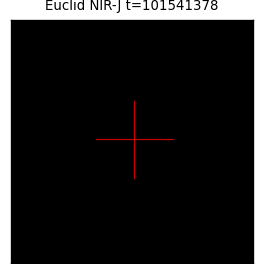
id F814W_039_2347966
RA=150.43428
Dec=1.88767
mag=-5.63
SNR=4066.3
tile=039
missing[J/H/E]=__E
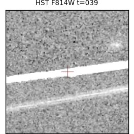
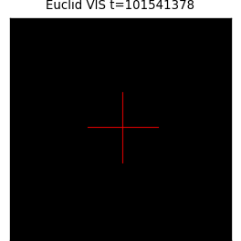

id F814W_056_4761563
RA=149.70928
Dec=2.10354
mag=-5.09
SNR=4055.4
tile=056
missing[J/H/E]=J__
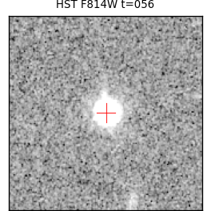
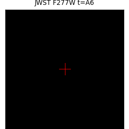
id F814W_074_6792766
RA=150.62110
Dec=2.36375
mag=-5.30
SNR=4053.5
tile=074
missing[J/H/E]=__E

id F115W_A7_0510407
RA=149.91983
Dec=2.06936
mag=-7.41
SNR=3993.2
tile=A7
missing[J/H/E]=_H_
id F814W_116_11401774
RA=149.62172
Dec=2.79457
mag=-5.18
SNR=3990.2
tile=116
missing[J/H/E]=__E


id F115W_B3_0856085
RA=150.21189
Dec=2.53914
mag=-7.20
SNR=3984.2
tile=B3
missing[J/H/E]=_H_
id VIS_101544257_1213903
RA=150.12896
Dec=2.27993
mag=-3.62
SNR=3952.8
tile=101544257
missing[J/H/E]=J__
id VIS_101541375_0464550
RA=149.42886
Dec=1.73699
mag=-4.31
SNR=3952.2
tile=101541375
missing[J/H/E]=_H_
id F115W_A9_0607869
RA=150.14375
Dec=1.89043
mag=-7.19
SNR=3950.1
tile=A9
missing[J/H/E]=_H_
id F814W_093_9135956
RA=149.53383
Dec=2.50648
mag=-5.27
SNR=3946.5
tile=093
missing[J/H/E]=__E


id F115W_A9_0608272
RA=150.14666
Dec=1.89149
mag=-7.10
SNR=3943.8
tile=A9
missing[J/H/E]=_H_
id F115W_B9_1181932
RA=150.31173
Dec=2.18615
mag=-7.22
SNR=3933.5
tile=B9
missing[J/H/E]=_H_
id VIS_101541376_0529742
RA=149.80908
Dec=1.88512
mag=-3.57
SNR=3919.5
tile=101541376
missing[J/H/E]=_H_
id F115W_A8_0532751
RA=149.95807
Dec=1.90429
mag=-7.15
SNR=3916.8
tile=A8
missing[J/H/E]=_H_
id F115W_A1_0013617
RA=149.73913
Dec=2.16958
mag=-7.12
SNR=3899.2
tile=A1
missing[J/H/E]=_H_
id F115W_B9_1195382
RA=150.32240
Dec=2.23205
mag=-7.03
SNR=3894.6
tile=B9
missing[J/H/E]=_H_
id F115W_A10_0080125
RA=150.28636
Dec=1.77019
mag=-6.93
SNR=3889.8
tile=A10
missing[J/H/E]=__E


id F115W_A8_0528331
RA=149.97605
Dec=1.87163
mag=-7.18
SNR=3884.9
tile=A8
missing[J/H/E]=__E


id F115W_A5_0379293
RA=150.35035
Dec=2.07493
mag=-7.21
SNR=3882.0
tile=A5
missing[J/H/E]=_H_
id VIS_101542817_0839178
RA=150.17886
Dec=2.00904
mag=-4.55
SNR=3862.7
tile=101542817
missing[J/H/E]=J__
id F814W_057_4893027
RA=149.53165
Dec=2.04608
mag=-5.17
SNR=3854.8
tile=057
missing[J/H/E]=__E

id VIS_101539938_0264079
RA=150.31454
Dec=1.47156
mag=-3.57
SNR=3844.9
tile=101539938
missing[J/H/E]=_H_
id VIS_101544257_1204970
RA=150.04969
Dec=2.21715
mag=-4.50
SNR=3832.3
tile=101544257
missing[J/H/E]=J__
id F814W_093_9147966
RA=149.55352
Dec=2.53813
mag=-5.20
SNR=3830.9
tile=093
missing[J/H/E]=__E

id VIS_101545696_1510476
RA=149.98020
Dec=2.57628
mag=-3.71
SNR=3827.3
tile=101545696
missing[J/H/E]=J__
id F115W_A9_0593704
RA=150.13292
Dec=1.84588
mag=-6.95
SNR=3814.5
tile=A9
missing[J/H/E]=__E

id VIS_101548573_2231104
RA=149.61466
Dec=2.92375
mag=-3.73
SNR=3783.5
tile=101548573
missing[J/H/E]=_H_

id F814W_062_5164570
RA=150.59912
Dec=2.24398
mag=-5.30
SNR=3768.4
tile=062
missing[J/H/E]=__E

id F115W_A9_0598682
RA=150.13164
Dec=1.86201
mag=-7.03
SNR=3748.4
tile=A9
missing[J/H/E]=_H_
id F115W_A9_0601223
RA=150.16282
Dec=1.86926
mag=-7.21
SNR=3745.6
tile=A9
missing[J/H/E]=_H_
id F115W_A6_0431675
RA=149.71660
Dec=2.07817
mag=-6.94
SNR=3661.1
tile=A6
missing[J/H/E]=_H_
id F115W_B10_0738575
RA=150.48169
Dec=2.27317
mag=-6.93
SNR=3640.1
tile=B10
missing[J/H/E]=_H_
id VIS_101544257_1192808
RA=150.09723
Dec=2.14098
mag=-3.50
SNR=3603.2
tile=101544257
missing[J/H/E]=JH_
id F115W_A9_0594005
RA=150.21826
Dec=1.81565
mag=-7.81
SNR=3594.0
tile=A9
missing[J/H/E]=_HE


id F115W_A10_0084108
RA=150.21826
Dec=1.81565
mag=-7.81
SNR=3589.4
tile=A10
missing[J/H/E]=_HE


id VIS_101548573_2242011
RA=149.59447
Dec=2.95978
mag=-3.71
SNR=3569.0
tile=101548573
missing[J/H/E]=_H_
id VIS_101539938_0269786
RA=150.30827
Dec=1.50872
mag=-3.85
SNR=3552.3
tile=101539938
missing[J/H/E]=_H_

id F115W_B9_1170079
RA=150.27030
Dec=2.15689
mag=-6.90
SNR=3548.4
tile=B9
missing[J/H/E]=_H_


id VIS_101548573_2225648
RA=149.63514
Dec=2.89519
mag=-3.65
SNR=3547.8
tile=101548573
missing[J/H/E]=_H_

id VIS_101545697_1544879
RA=150.05577
Dec=2.46957
mag=-3.61
SNR=3546.2
tile=101545697
missing[J/H/E]=J__
id VIS_101541376_0528590
RA=149.89539
Dec=1.87802
mag=-4.37
SNR=3546.2
tile=101541376
missing[J/H/E]=J__
id F115W_B9_1171222
RA=150.33536
Dec=2.13564
mag=-7.12
SNR=3528.3
tile=B9
missing[J/H/E]=_H_


id VIS_101542818_0911476
RA=150.17886
Dec=2.00904
mag=-4.55
SNR=3515.5
tile=101542818
missing[J/H/E]=J__


id F115W_B2_0785364
RA=150.04390
Dec=2.57174
mag=-6.81
SNR=3512.6
tile=B2
missing[J/H/E]=_H_
id F115W_A4_0341771
RA=150.27030
Dec=2.15689
mag=-6.90
SNR=3511.2
tile=A4
missing[J/H/E]=_H_

id F115W_A4_0342842
RA=150.33536
Dec=2.13564
mag=-7.12
SNR=3491.4
tile=A4
missing[J/H/E]=_H_


id F115W_B8_1122328
RA=150.10049
Dec=2.28718
mag=-6.93
SNR=3483.6
tile=B8
missing[J/H/E]=_H_
id VIS_101541376_0498246
RA=149.69251
Dec=1.68020
mag=-3.43
SNR=3476.6
tile=101541376
missing[J/H/E]=_H_
id F115W_B5_0969677
RA=150.55564
Dec=2.43457
mag=-6.86
SNR=3445.3
tile=B5
missing[J/H/E]=_H_
id VIS_101544256_1130487
RA=149.73769
Dec=2.12429
mag=-3.45
SNR=3432.3
tile=101544256
missing[J/H/E]=J__
id F115W_A9_0617129
RA=150.13444
Dec=1.93364
mag=-7.27
SNR=3425.4
tile=A9
missing[J/H/E]=_H_
id VIS_101544258_1277683
RA=150.28072
Dec=2.36819
mag=-3.54
SNR=3421.7
tile=101544258
missing[J/H/E]=_H_
id F115W_A5_0392735
RA=150.33536
Dec=2.13564
mag=-7.12
SNR=3419.7
tile=A5
missing[J/H/E]=_H_


id VIS_101545697_1558455
RA=149.98019
Dec=2.57628
mag=-3.70
SNR=3416.1
tile=101545697
missing[J/H/E]=J__


id VIS_101545697_1535023
RA=150.09089
Dec=2.39122
mag=-4.63
SNR=3412.1
tile=101545697
missing[J/H/E]=J__
id VIS_101545697_1531107
RA=150.11378
Dec=2.36071
mag=-4.53
SNR=3404.6
tile=101545697
missing[J/H/E]=J__
id F115W_B10_0702073
RA=150.33536
Dec=2.13564
mag=-7.12
SNR=3390.9
tile=B10
missing[J/H/E]=_H_


id F115W_A2_0192404
RA=150.00183
Dec=2.23879
mag=-7.27
SNR=3382.0
tile=A2
missing[J/H/E]=_H_
id VIS_101541379_0553678
RA=150.53463
Dec=1.61403
mag=-3.62
SNR=3367.1
tile=101541379
missing[J/H/E]=_H_
id F115W_A1_0032427
RA=149.84783
Dec=2.19712
mag=-6.94
SNR=3350.5
tile=A1
missing[J/H/E]=_H_
id VIS_101541375_0451299
RA=149.67533
Dec=1.64952
mag=-4.03
SNR=3289.6
tile=101541375
missing[J/H/E]=_H_
id VIS_101541375_0448886
RA=149.49567
Dec=1.63276
mag=-3.47
SNR=3288.6
tile=101541375
missing[J/H/E]=_H_

id VIS_101544254_1045360
RA=149.39460
Dec=2.13910
mag=-3.64
SNR=3285.2
tile=101544254
missing[J/H/E]=_H_
id VIS_101539938_0279213
RA=150.15736
Dec=1.56700
mag=-4.33
SNR=3269.2
tile=101539938
missing[J/H/E]=_H_
id VIS_101539937_0237783
RA=149.95766
Dec=1.55651
mag=-3.75
SNR=3263.9
tile=101539937
missing[J/H/E]=_H_
id VIS_101545700_1659586
RA=150.86135
Dec=2.37907
mag=-3.88
SNR=3247.2
tile=101545700
missing[J/H/E]=_H_
id VIS_101547137_2034626
RA=150.33381
Dec=2.76361
mag=nan
tile=
missing[J/H/E]=___
id VIS_101545698_1584727
RA=150.45483
Dec=2.49641
mag=nan
tile=
missing[J/H/E]=___
id VIS_101545697_1554756
RA=150.01378
Dec=2.54928
mag=-1.75
tile=
missing[J/H/E]=___
id VIS_101545697_1559422
RA=150.16596
Dec=2.58335
mag=nan
tile=
missing[J/H/E]=___
id VIS_101545694_1402737
RA=149.46845
Dec=2.35937
mag=nan
tile=
missing[J/H/E]=___
id VIS_101539937_0243034
RA=150.01766
Dec=1.60152
mag=nan
tile=
missing[J/H/E]=___
id VIS_101541379_0577984
RA=150.62406
Dec=1.82472
mag=nan
tile=
missing[J/H/E]=___
id VIS_101542818_0908077
RA=150.34650
Dec=2.00034
mag=nan
tile=
missing[J/H/E]=___
id VIS_101544260_1384394
RA=150.76593
Dec=2.33928
mag=nan
tile=
missing[J/H/E]=___
id VIS_101544258_1258510
RA=150.28776
Dec=2.23027
mag=-1.18
tile=
missing[J/H/E]=___
id VIS_101544256_1157831
RA=149.93724
Dec=2.29888
mag=-2.19
tile=
missing[J/H/E]=___
id VIS_101544257_1192589
RA=150.13928
Dec=2.13950
mag=nan
tile=
missing[J/H/E]=___
id VIS_101545698_1569340
RA=150.28374
Dec=2.37403
mag=nan
tile=
missing[J/H/E]=___
id VIS_101542817_0844527
RA=149.95879
Dec=2.05199
mag=-1.75
tile=
missing[J/H/E]=___
id VIS_101545698_1580045
RA=150.29237
Dec=2.45837
mag=nan
tile=
missing[J/H/E]=___
id VIS_101545698_1584664
RA=150.45308
Dec=2.49593
mag=nan
tile=
missing[J/H/E]=___
id VIS_101541379_0563301
RA=150.49336
Dec=1.70170
mag=nan
tile=
missing[J/H/E]=___
id VIS_101539936_0190589
RA=149.91519
Dec=1.61950
mag=nan
tile=
missing[J/H/E]=___
id VIS_101545694_1402760
RA=149.46642
Dec=2.35948
mag=nan
tile=
missing[J/H/E]=___
id VIS_101545697_1553427
RA=150.02651
Dec=2.53880
mag=nan
tile=
missing[J/H/E]=___
id VIS_101545698_1600521
RA=150.24454
Dec=2.62104
mag=nan
tile=
missing[J/H/E]=___
id VIS_101541379_0555927
RA=150.45392
Dec=1.63357
mag=nan
tile=
missing[J/H/E]=___
id VIS_101548573_2224523
RA=149.78034
Dec=2.88747
mag=nan
tile=
missing[J/H/E]=___


id VIS_101548576_2413176
RA=150.37047
Dec=2.88354
mag=nan
tile=
missing[J/H/E]=___
id VIS_101539937_0242019
RA=150.05949
Dec=1.59348
mag=nan
tile=
missing[J/H/E]=___
id VIS_101542820_1010959
RA=150.77239
Dec=2.05685
mag=nan
tile=
missing[J/H/E]=___
id VIS_101541379_0584137
RA=150.53465
Dec=1.87114
mag=nan
tile=
missing[J/H/E]=___
id VIS_101541378_0548807
RA=150.35690
Dec=1.85729
mag=-7.73
tile=
missing[J/H/E]=___
id VIS_101545700_1721709
RA=150.73527
Dec=2.52226
mag=nan
tile=
missing[J/H/E]=___


id VIS_101544260_1346544
RA=150.74969
Dec=2.22923
mag=nan
tile=
missing[J/H/E]=___